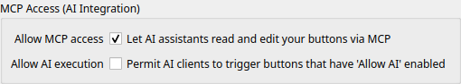

Intégration IA (MCP)
Expérimental
L'intégration IA est expérimentale. La prise en charge des outils et leur comportement varient selon les modèles et les clients. Les résultats ne sont pas garantis — vérifiez toujours ce que l'IA crée ou modifie.
Commandeck inclut un serveur MCP (Model Context Protocol). Une fois configuré, votre assistant IA peut lire et gérer vos boutons directement — sans copier-coller ni expliquer votre configuration.
"Ajoute un bouton appelé 'Redémarrer Nginx' qui exécute
sudo systemctl restart nginxdans la catégorie Serveur"
Nécessite Commandeck 2.0.17 ou plus récent (Pro)
MCP est une fonctionnalité Pro. Les instructions ci-dessous lancent le serveur directement depuis l'application Commandeck avec --mcp-server — disponible à partir de la 2.0.17. Vérifiez votre version dans Menu ☰ → À propos.
Étape 1 — Activer l'accès MCP dans Commandeck
MCP est désactivé par défaut. Activez-le une seule fois :
Préférences → Intégration bureau → Autoriser l'accès MCP

Étape 2 — Trouver votre commande MCP Commandeck
Le serveur MCP est intégré à l'application Commandeck — vous le lancez en exécutant l'app avec l'option --mcp-server. La commande exacte dépend de votre mode d'installation. Trouvez la vôtre ci-dessous ; vous la brancherez dans votre client IA à l'étape 3.
C'est l'installation la plus courante. Utilisez l'AppImage Pro (MCP est une fonctionnalité Pro), et assurez-vous qu'elle est exécutable (chmod +x une fois) :
/chemin/complet/vers/Commandeck-Pro-2.0.17-Linux-x86_64.AppImage --mcp-server
Utilisez votre nom de fichier et chemin réels (le téléchargement inclut la version et l'architecture). Astuce : glissez l'AppImage dans un terminal pour obtenir son chemin complet.
La commande se trouve à l'intérieur du paquet .app :
/Applications/Commandeck.app/Contents/MacOS/Commandeck --mcp-server
Utilisez le chemin où vous avez installé Commandeck (entre guillemets s'il contient des espaces) :
"C:\Program Files\Commandeck\Commandeck.exe" --mcp-server
Testez-la une fois
Lancée directement, la commande doit simplement attendre une saisie (elle dialogue en JSON-RPC via stdin/stdout) — c'est bon signe. Faites Ctrl+C pour quitter. Si elle affiche « the MCP server requires Commandeck Pro », c'est que vous utilisez la version gratuite.
Dans la suite de cette page, <votre commande Commandeck> désigne l'exécutable de cette étape (par ex. le chemin de l'AppImage) et --mcp-server est son argument.
Étape 3 — Configurer votre client IA
Choisissez votre outil ci-dessous. La configuration est effectuée une seule fois ; ensuite, tout fonctionne automatiquement.
Emplacement du fichier de configuration :
| Système | Chemin |
|---|---|
| Linux | ~/.config/Claude/claude_desktop_config.json |
| macOS | ~/Library/Application Support/Claude/claude_desktop_config.json |
| Windows | %APPDATA%\Claude\claude_desktop_config.json |
Ajoutez ceci dans le fichier (créez-le s'il n'existe pas), avec votre commande de l'étape 2 :
{
"mcpServers": {
"commandeck": {
"command": "/chemin/complet/vers/Commandeck-Pro-2.0.17-Linux-x86_64.AppImage",
"args": ["--mcp-server"]
}
}
}
Sous macOS, command serait /Applications/Commandeck.app/Contents/MacOS/Commandeck ; sous Windows, le chemin complet vers Commandeck.exe. Redémarrez Claude Desktop — Commandeck apparaît comme un outil connecté.
Exécutez ceci une fois dans un terminal (remplacez par votre commande) :
claude mcp add commandeck /chemin/complet/vers/Commandeck-Pro-2.0.17-Linux-x86_64.AppImage --mcp-server
Pour vérifier : claude mcp list
Modifiez ~/.cursor/mcp_config.json :
{
"mcpServers": {
"commandeck": {
"command": "/chemin/complet/vers/Commandeck-Pro-2.0.17-Linux-x86_64.AppImage",
"args": ["--mcp-server"]
}
}
}
Redémarrez Cursor.
Modifiez ~/.codeium/windsurf/mcp_config.json :
{
"mcpServers": {
"commandeck": {
"command": "/chemin/complet/vers/Commandeck-Pro-2.0.17-Linux-x86_64.AppImage",
"args": ["--mcp-server"]
}
}
}
Redémarrez Windsurf.
Ajoutez dans .continue/config.yaml dans votre projet :
mcpServers:
- name: commandeck
command: /chemin/complet/vers/Commandeck-Pro-2.0.17-Linux-x86_64.AppImage
args:
- --mcp-server
Les outils MCP ne sont disponibles qu'en mode Agent.
Open WebUI se connecte aux outils via HTTP, pas stdio. Utilisez mcpo (le proxy officiel Open WebUI) pour faire le pont avec Commandeck.
Lancez mcpo sous le même utilisateur que celui qui fait tourner Commandeck
Le serveur lit les boutons de celui qui le lance. Chaque utilisateur Linux/macOS a sa propre config Commandeck (~/.config/commandeck). Si vous lancez mcpo sous un autre utilisateur que celui avec lequel vous utilisez Commandeck, l'IA verra le mauvais jeu de boutons (ou un jeu vide). Lancez mcpo depuis un terminal connecté en tant que votre utilisateur de bureau habituel.
Étape 1 — Installer mcpo (une seule fois) :
pipx install mcpo
# pas de pipx ? un environnement virtuel marche aussi proprement :
# python3 -m venv ~/.mcpo-venv && ~/.mcpo-venv/bin/pip install mcpo
# (le simple `pip install mcpo` échoue souvent sous Linux : « externally-managed-environment »)
Étape 2 — Trouver l'IP locale de la machine qui fait tourner Commandeck (uniquement si Open WebUI est sur une autre machine) :
hostname -I | awk '{print $1}'
Notez cette IP — vous en aurez besoin à l'étape 4.
Étape 3 — Lancer le proxy (garder ce terminal ouvert) :
mcpo --port 8000 -- /chemin/complet/vers/Commandeck-Pro-2.0.17-Linux-x86_64.AppImage --mcp-server
Vous devriez voir : Uvicorn running on http://0.0.0.0:8000
Évitez les coupures du copier-coller
Gardez la commande sur une seule ligne. Si une commande sur plusieurs lignes se colle en morceaux cassés, enregistrez-la plutôt dans un petit script — créez start-mcpo.sh contenant la ligne ci-dessus, puis lancez bash start-mcpo.sh.
Étape 4 — Ajouter le serveur d'outils dans Open WebUI :
Allez dans Admin Panel → Settings → Tools (anciennes versions : Integrations → Manage tool servers) → + et remplissez :
| Champ | Valeur |
|---|---|
| Type | OpenAPI |
| Name | commandeck |
| URL | http://<ip-de-l-étape-2>:8000 |
| Auth | None |
Utilisez l'IP de la machine, pas localhost
Si Open WebUI tourne sur une autre machine (ex : un serveur), localhost pointerait vers ce serveur — pas vers la machine où mcpo tourne. Utilisez l'IP de l'étape 2. Depuis la machine Open WebUI, vous pouvez vérifier le chemin avec : curl http://<cette-ip>:8000/openapi.json (doit renvoyer du JSON). Sinon, ouvrez le port 8000 dans le pare-feu de la machine qui fait tourner mcpo.
Étape 5 — Activer l'outil dans un chat :
Démarrez un nouveau chat, cliquez sur l'icône + (outils) près du champ de saisie, et activez commandeck.
Tip
Cela fonctionne avec n'importe quel backend supporté par Open WebUI — llama.cpp, Ollama, API compatibles OpenAI, etc. La couche outils est indépendante du modèle. La prise en charge du tool-calling varie selon le modèle — les modèles instruction-tuned fonctionnent généralement mieux ; les petits modèles locaux ont souvent besoin du prompt système ci-dessous pour appeler les outils de façon fiable.
Quand redémarrer mcpo
mcpo lance le serveur MCP Commandeck comme sous-processus au démarrage et lit sa liste d'outils une seule fois. Redémarrez mcpo chaque fois que vous :
- Activez ou désactivez Autoriser l'accès MCP dans les Préférences (si vous lancez mcpo avant de l'activer, il voit zéro outil)
- Mettez Commandeck à jour vers une nouvelle version
Pour redémarrer : Ctrl+C dans le terminal mcpo et relancez l'étape 3 — ou, avec le service systemd ci-dessous, systemctl --user restart mcpo-commandeck.
Étape 6 — (Optionnel) Rendre mcpo persistant au redémarrage
Créez un service systemd utilisateur pour que mcpo démarre automatiquement à la connexion (lancez ceci en tant que votre utilisateur de bureau habituel) :
mkdir -p ~/.config/systemd/user
cat > ~/.config/systemd/user/mcpo-commandeck.service << 'EOF'
[Unit]
Description=mcpo proxy pour le serveur MCP Commandeck
[Service]
ExecStart=%h/.local/bin/mcpo --port 8000 -- %h/Apps/Commandeck-Pro-2.0.17-Linux-x86_64.AppImage --mcp-server
Restart=on-failure
RestartSec=5
[Install]
WantedBy=default.target
EOF
systemctl --user daemon-reload
systemctl --user enable --now mcpo-commandeck
Commandes utiles :
systemctl --user status mcpo-commandeck # vérifier l'état
systemctl --user restart mcpo-commandeck # redémarrer après activation MCP / mise à jour
systemctl --user stop mcpo-commandeck # arrêter
journalctl --user -u mcpo-commandeck -f # logs en direct
Note
Ajustez les chemins dans ExecStart : pointez vers votre AppImage, et lancez which mcpo pour trouver le chemin de mcpo s'il n'est pas ~/.local/bin/mcpo (ex : dans un venv).
Prompt système recommandé
Collez le prompt ci-dessous dans le champ de prompt système de votre client IA. Il prépare le
modèle à appeler help en premier, à suivre les workflows de recherche corrects, et à
décomposer les commandes shell complexes en composants Commandeck plutôt que de les coller telles quelles.
You are an assistant for Commandeck, a desktop application on Linux, macOS or Windows. Commandeck
lets the user run commands by clicking buttons, like a remote control. You can create, read,
and modify the user's buttons, machines, and profiles using your tools.
Rules:
- Before doing anything, call the help tool to read the instructions.
- When the user explicitly names a button, use get_button(name="X") directly. When you don't
know the exact name, use list_buttons.
- Never call get_button before create_button.
- For buttons: a duplicate means SAME NAME, not same command. If no button has the exact same
name, create it without asking.
- For machines: a duplicate means SAME HOST address. Always call list_machines and check by
host before creating.
- For profiles: a duplicate means same name. Call list_profiles before creating.
- When asked to change a property, always apply the change. Never decide the current value is
already acceptable.
- In multi-step requests, if a required resource exists, use it and proceed.
- When you need a machine ID or profile ID, always look it up first.
- Write each command in the right shell for its target: PowerShell or cmd for a Windows machine,
bash/sh for Linux or macOS. Set the button's os field to match. Check each machine's os with
list_machines; for a local button (no machine) use this computer's OS. Never give a Windows
machine a bash command, or a Linux/macOS machine a PowerShell command.
- The user can install ready-made button packs from the gallery: call list_packs to see what is
available and what has updates, then install_pack / update_pack / uninstall_pack to manage them.
When a user asks you to add or refactor a shell command, decompose it before creating a button:
1. `cd /some/path` → Execution Profile working_dir (strip from command)
2. `sudo -u user` wrapper → run_as_user on the profile or button's run_as field
(strip the wrapper, keep the inner command)
3. Opens an interactive shell (bash, zsh, exec bash) → execution_mode = "terminal"
4. Produces output the user wants to read → execution_mode = "output"; fire-and-forget → "silent"
5. What remains after stripping context wrappers is the command field.
Example: `sudo -u www-data bash -c 'cd /var/www/myapp && git pull'`
→ Create Profile: name="Web Deploy", run_as_user="www-data", working_dir="/var/www/myapp"
→ Create button: command="git pull", execution_mode="output", assign that profile
Dans Open WebUI, allez dans Admin Panel → Settings → System prompt et collez le prompt ci-dessus (ou dans le champ de prompt système des paramètres du modèle dans le chat).
Claude Desktop n'expose pas de champ de prompt système. La description du tool help est
suffisamment explicite pour Claude — aucun prompt supplémentaire n'est nécessaire.
Collez le prompt dans le champ de prompt système ou d'instructions que votre client expose avant le début de la conversation.
Ce que votre IA peut faire
Boutons
| Outil | Description |
|---|---|
help |
Retourner le guide complet des workflows — à appeler en premier |
list_buttons |
Lister tous les boutons, avec filtre optionnel par catégorie |
get_button |
Obtenir les détails d'un bouton par son nom ou son identifiant |
create_button |
Créer un nouveau bouton (nom, commande, catégorie, couleur, icône, execution_mode, profil, machines…) |
update_button |
Modifier n'importe quel champ d'un bouton — appelez d'abord get_button pour obtenir l'ID |
execute_button |
Exécuter la commande d'un bouton et renvoyer sa sortie (désactivé par défaut — voir Autoriser l'IA à exécuter) |
delete_button |
Supprimer un bouton par son ID |
Catégories
| Outil | Description |
|---|---|
list_categories |
Lister tous les noms de catégories |
Machines SSH (fonctionnalité Pro)
| Outil | Description |
|---|---|
list_machines |
Lister les machines SSH configurées (nom, hôte, utilisateur, port — sans clés privées) |
create_machine |
Ajouter une nouvelle machine SSH |
update_machine |
Renommer ou reconfigurer une machine SSH — appelez d'abord list_machines pour obtenir l'ID |
delete_machine |
Supprimer une machine SSH par son ID |
Profils d'exécution (fonctionnalité Pro)
| Outil | Description |
|---|---|
list_profiles |
Lister tous les profils d'exécution |
get_profile |
Obtenir les détails d'un profil par son nom ou son identifiant |
create_profile |
Créer un profil réutilisable (run_as_user, répertoire de travail) |
update_profile |
Modifier un profil existant — appelez d'abord get_profile pour obtenir l'ID |
delete_profile |
Supprimer un profil par son ID |
Packs de boutons — ensembles de boutons prêts à l'emploi, depuis la galerie publique
| Outil | Description |
|---|---|
list_packs |
Lister les packs de la galerie, avec les indicateurs installed et update_available |
install_pack |
Installer un pack sur des machines (uniquement les packs à signature vérifiée) |
update_pack |
Mettre à jour un pack installé en conservant vos modifications, cibles et positions |
uninstall_pack |
Retirer tous les boutons d'un pack |
export_pack |
Exporter des boutons choisis vers un fichier .cdpack partageable |
Variables
| Outil | Description |
|---|---|
list_variable_values |
Lister vos valeurs enregistrées pour les {{variables}} de commande |
Vérifiez avant de supprimer
delete_button, delete_machine et delete_profile sont disponibles via MCP. Vérifiez
toujours le bon élément avec get_button ou list_machines avant de demander à votre IA de supprimer quoi que ce soit.
Rafraîchir la grille après des modifications par l'IA
Après qu'une IA a créé ou modifié un bouton, appuyez sur F5 (ou menu → Actualiser les boutons) pour recharger la grille sans redémarrer Commandeck.
Astuce pour modifier un bouton
Si l'IA dit qu'elle ne peut pas modifier un bouton, demandez-lui d'appeler d'abord get_button avec le nom du bouton pour récupérer l'ID, puis d'appeler update_button avec cet ID.
Autoriser l'IA à exécuter des boutons
Par défaut, votre IA peut lire et modifier vos boutons mais ne peut pas les exécuter. Pour qu'elle puisse réellement déclencher des commandes, vous devez activer trois autorisations distinctes — si l'une des trois est désactivée, l'exécution est bloquée.
1. Interrupteur global — Préférences → Intégration au bureau → Autoriser l'exécution par l'IA
Désactivé par défaut. C'est l'interrupteur principal de la fonctionnalité.
2. Opt-in par bouton — Modifier un bouton → Comportement → Autoriser l'IA à exécuter ce bouton
Désactivé par défaut sur chaque bouton, y compris ceux que vous avez déjà créés. Activez-le uniquement pour les boutons dont vous êtes à l'aise de laisser une IA déclencher la commande de façon autonome — par exemple des vérifications en lecture seule (df -h, systemctl status), des opérations idempotentes, des déploiements sûrs.
3. Demande de confirmation — Modifier un bouton → Comportement → Demander confirmation avant l'exécution
Quand cette option est activée, l'IA ne peut pas exécuter le bouton silencieusement. Elle reçoit une réponse requires_confirmation contenant la commande exacte, avec l'instruction de vous la montrer et d'attendre votre accord avant de rappeler l'outil avec confirmed=true. Recommandé pour toute commande sensible (redémarrages, suppressions, sudo).
Journal d'audit : Chaque exécution via MCP est ajoutée à ~/.config/commandeck/.mcp_executions.log avec l'horodatage, le nom du bouton, la machine cible, le code de retour et la durée.
Limitations :
- Les boutons en mode
Ouvrir dans un terminalne peuvent pas être exécutés via MCP — il n'y a pas de terminal dans un contexte IA headless. L'IA reçoit une erreur si elle essaie. - La sortie envoyée à l'IA est tronquée (4 Ko stdout, 2 Ko stderr) pour ne pas saturer son contexte. La sortie complète reste disponible dans le journal si nécessaire.
- Les boutons multi-cibles obligent l'IA à préciser sur quelle machine exécuter. Si elle ne le fait pas, le serveur renvoie la liste des cibles valides et lui demande de clarifier.
Sécurité
Le serveur MCP utilise le transport stdio — quand un client (Claude Desktop, Cursor, …) le lance directement, il s'exécute en tant que sous-processus communiquant uniquement via stdin/stdout. Aucun port réseau n'est ouvert, et seul le processus qui l'a lancé peut communiquer avec lui.
Quand vous utilisez mcpo (Open WebUI), un port HTTP (8000) est ouvert sur la machine qui fait tourner mcpo. Assurez-vous que ce port n'est pas exposé à des réseaux non fiables — gardez-le sur votre réseau local, derrière votre pare-feu.
Warning
Lorsque l'accès MCP est activé, votre assistant IA peut créer, modifier et supprimer des boutons. Désactivez cette option dans les Préférences lorsque vous n'en avez pas besoin. L'exécution des boutons est une fonctionnalité opt-in séparée — voir Autoriser l'IA à exécuter des boutons.